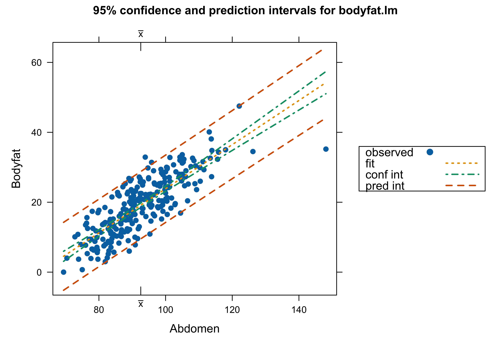
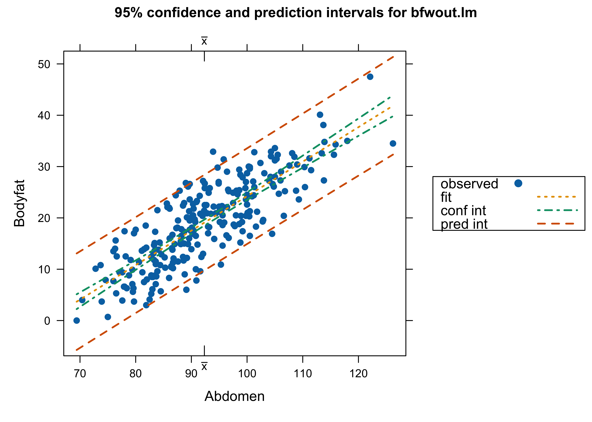
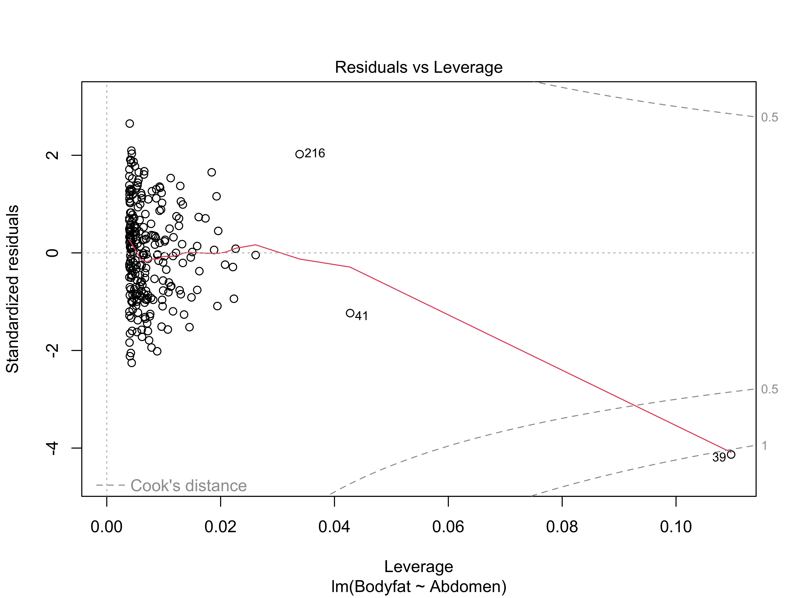
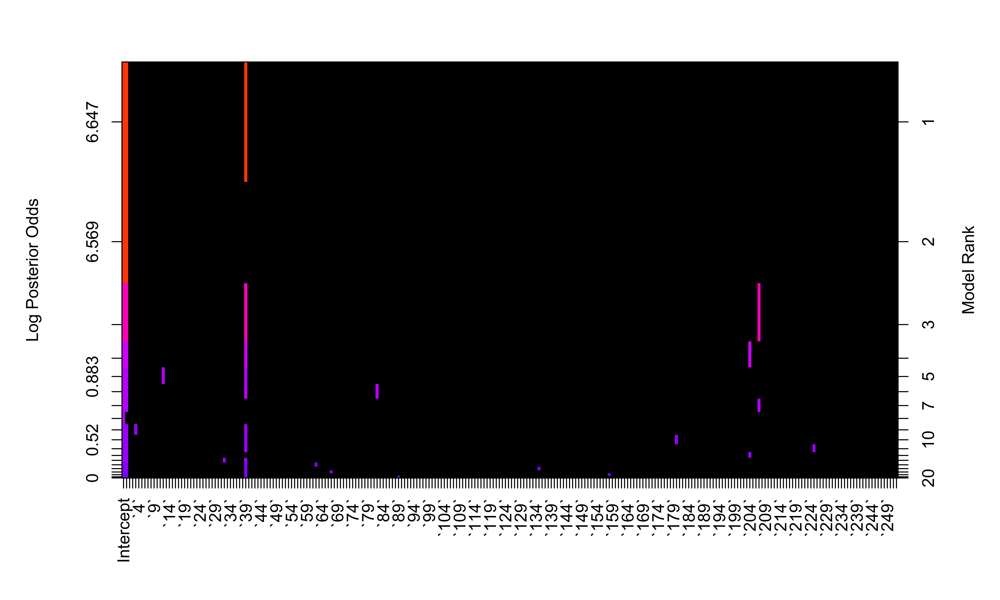
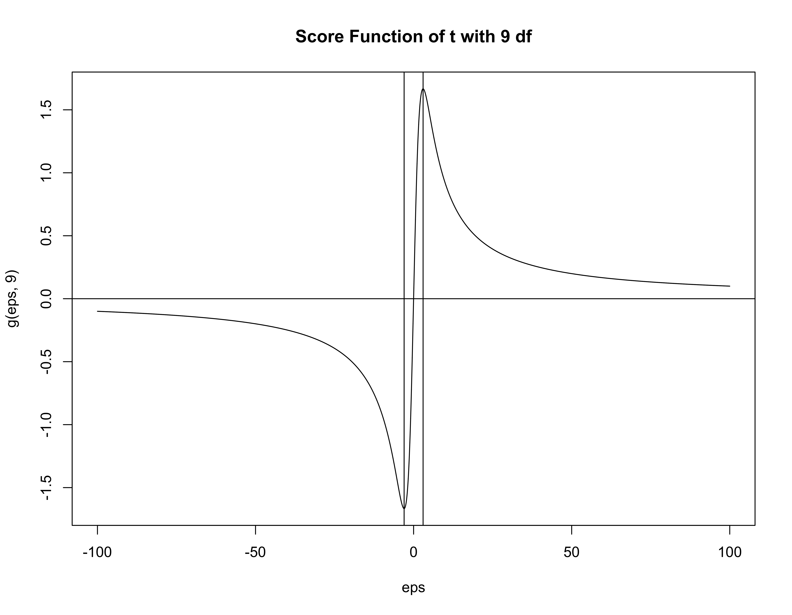
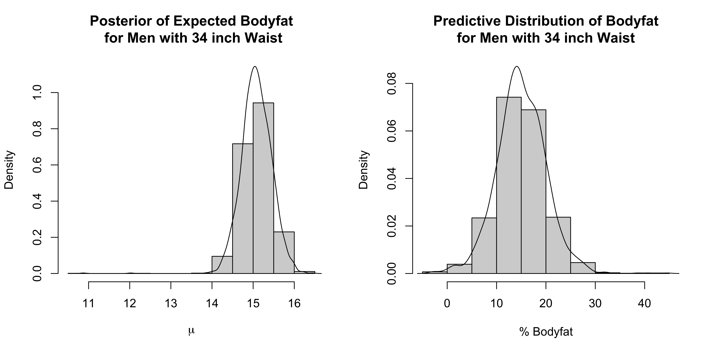
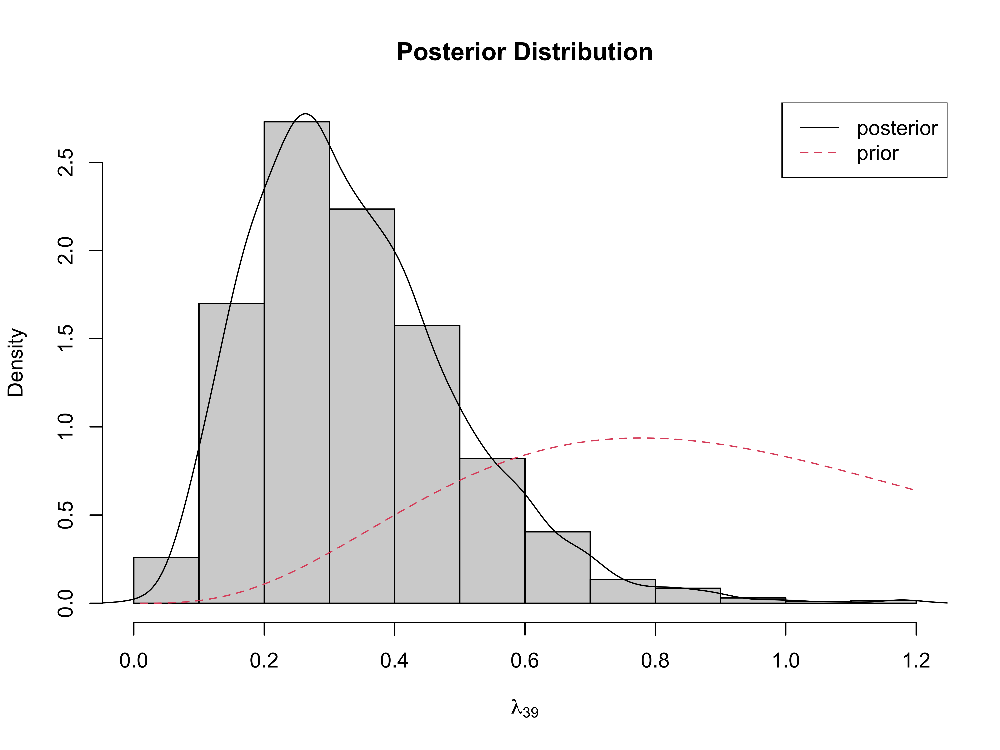

Lecture 18: Outliers and Robust Regression
STA702
Merlise Clyde
Duke University
Body Fat Data

Which analysis do we use? with Case 39 or not – or something different?
Cook’s Distance
Options for Handling Outliers
What are outliers?
Are there scientific grounds for eliminating the case?
Test if the case has a different mean than population
Report results with and without the case
Model Averaging to Account for Model Uncertainty?
Full model \(\mathbf{Y}= \mathbf{X}\boldsymbol{\beta}+ \mathbf{I}_n\delta+ \epsilon\)
\(\delta\) is a \(n \times 1\) vector; \(\boldsymbol{\beta}\) is \(p \times 1\)
All observations have a potentially different mean!
Outliers in Bayesian Regression
Hoeting, Madigan and Raftery (in various permutations) consider the problem of simultaneous variable selection and outlier identification
This is implemented in the package
BMAin the functionMC3.REGThis has the advantage that more than 2 points may be considered as outliers at the same time
The function uses a Markov chain to identify both important variables and potential outliers, but is coded in Fortran so should run reasonably quickly.
Can also use
BASor other variable selection programs
Model Averaging and Outliers
Full model \(\mathbf{Y}= \mathbf{X}\boldsymbol{\beta}+ \mathbf{I}_n\delta+ \epsilon\)
\(\delta\) is a \(n \times 1\) vector; \(\boldsymbol{\beta}\) is \(p \times 1\)
\(2^n\) submodels \(\gamma_i = 0 \Leftrightarrow \delta_i = 0\)
If \(\gamma_i = 1\) then case \(i\) has a different mean ``mean shift’’ outliers
Mean Shift \(=\) Variance Inflation
Model \(\mathbf{Y}= \mathbf{X}\boldsymbol{\beta}+ \mathbf{I}_n\delta+ \epsilon\)
Prior \[\begin{align} \qquad \delta_i \mid \gamma_i & \sim N(0, V \sigma^2 \gamma_i) \\ \qquad \gamma_i & \sim \textsf{Ber}(\pi) \end{align} \]
Then \(\epsilon_i\) given \(\sigma^2\) is independent of \(\delta_i\) and \[\epsilon^*_i \equiv \epsilon_i + \delta_i \mid \sigma^2 \left\{ \begin{array}{llc} N(0, \sigma^2) & wp &(1 - \pi) \\ N(0, \sigma^2(1 + V)) & wp & \pi \end{array} \right. \]
Model \(\mathbf{Y}= \mathbf{X}\boldsymbol{\beta}+ \epsilon^*\) variance inflation
\(V+1 = K = 7\) in the paper by Hoeting et al. package
BMA
Simultaneous Outlier and Variable Selection
library(BMA)
bodyfat.bma = MC3.REG(all.y = bodyfat$Bodyfat, all.x = as.matrix(bodyfat$Abdomen),
num.its = 10000, outliers = TRUE)
summary(bodyfat.bma)
Call:
MC3.REG(all.y = bodyfat$Bodyfat, all.x = as.matrix(bodyfat$Abdomen), num.its = 10000, outliers = TRUE)
Model parameters: PI = 0.02 K = 7 nu = 2.58 lambda = 0.28 phi = 2.85
15 models were selected
Best 5 models (cumulative posterior probability = 0.9939 ):
prob model 1 model 2 model 3 model 4 model 5
variables
all.x 1 x x x x x
outliers
39 0.94932 x x . x .
204 0.04117 . . . x .
207 0.10427 . x . . x
post prob 0.814572 0.095383 0.044490 0.035024 0.004385BAS with Truncated Prior
Change Error Assumptions
Use a Student-t error model \[\begin{eqnarray*} Y_i & \mathrel{\mathop{\sim}\limits^{\rm ind}}& t(\nu, \alpha + \beta x_i, 1/\phi) \\ L(\alpha, \beta,\phi) & \propto & \prod_{i = 1}^n \phi^{1/2} \left(1 + \frac{\phi (y_i - \alpha - \beta x_i)^2}{\nu}\right)^{-\frac{(\nu + 1)}{2}} \end{eqnarray*}\]
Use Prior \(p(\alpha, \beta, \phi) \propto 1/\phi\)
Posterior distribution \[ p(\alpha, \beta, \phi \mid Y) \propto \phi^{n/2 - 1} \prod_{i = 1}^n \left(1 + \frac{\phi (y_i - \alpha - \beta x_i)^2}{\nu}\right)^{-\frac{(\nu + 1)}{2}}\]
Bounded Influence
Treat \(\sigma^2\) as given, then influence of individual observations on the posterior distribution of \(\boldsymbol{\beta}\) in the model where \(\textsf{E}[\mathbf{Y}_i] = \mathbf{x}_i^T\boldsymbol{\beta}\) is investigated through the score function: \[ \frac{d} {d \boldsymbol{\beta}} \log p (\boldsymbol{\beta}\mid \mathbf{Y}) = \frac{d} {d \boldsymbol{\beta}} \log p(\boldsymbol{\beta}) + \sum_{i = 1}^n \mathbf{x}_i g(y_i - \mathbf{x}^T_i \boldsymbol{\beta}) \]
influence function of the error distribution (unimodal, continuous, differentiable, symmetric) \[ g(\boldsymbol{\epsilon}) = - \frac{d} {d \boldsymbol{\epsilon}} \log p(\boldsymbol{\epsilon}) \]
An outlying observation \(y_j\) is accommodated if the posterior distribution for \(p(\boldsymbol{\beta}\mid \mathbf{Y}\) converges to \(p(\boldsymbol{\beta}\mid \mathbf{Y}_{(i)})\) for all \(\boldsymbol{\beta}\) as \(|\mathbf{Y}_i| \to \infty\).
Requires error models with influence functions that go to zero such as the Student \(t\) (O’Hagan, 1979, West 1984, Hamura 2023)
Choice of df for Student-\(t\)
Investigate the Score function \[ \frac{d} {d \boldsymbol{\beta}} \log p (\boldsymbol{\beta}\mid \mathbf{Y}) = \frac{d} {d \boldsymbol{\beta}} \log p(\boldsymbol{\beta}) + \sum_{i = 1}^n \mathbf{x}_i g(y_i - \mathbf{x}^T_i \boldsymbol{\beta}) \]

Score function for \(t\) with \(\alpha\) degrees of freedom has turning points at \(\pm \sqrt{\alpha}\)
\(g'(\boldsymbol{\epsilon})\) is negative when \(\boldsymbol{\epsilon}^2 > \alpha\) (standardized errors)
Contribution of observation to information matrix is negative and the observation is doubtful
Suggest taking \(\alpha = 8\) or \(\alpha = 9\) to reject errors larger than \(\sqrt{8}\) or \(3\) sd.
Scale-Mixtures of Normal Representation
Latent Variable Model \[\begin{eqnarray*} Y_i \mid \alpha, \beta, \phi, \lambda & \mathrel{\mathop{\sim}\limits^{\rm ind}}& N(\alpha + \beta x_i, \frac{1}{\phi \lambda_i}) \\ \lambda_i & \mathrel{\mathop{\sim}\limits^{\rm iid}}& G(\nu/2, \nu/2) \\ p(\alpha, \beta, \phi) & \propto & 1/\phi \end{eqnarray*}\]
Joint Posterior Distribution: \[\begin{eqnarray*} p((\alpha, \beta, \phi, \lambda_1, \ldots, \lambda_n \mid Y) \propto \, & & \phi^{n/2} \exp\left\{ - \frac{\phi}{2} \sum \lambda_i(y_i - \alpha - \beta x_i)^2 \right\} \times \\ & & \phi^{-1} \\ & &\prod_{i=1}^n \lambda_i^{\nu/2 - 1} \exp(- \lambda_i \nu/2) \end{eqnarray*}\]
Integrate out ``latent’’ \(\lambda\)’s to obtain marginal \(t\) distribution
JAGS - Just Another Gibbs Sampler
rr.model = function() {
df <- 9
for (i in 1:n) {
mu[i] <- alpha0 + alpha1*(X[i] - Xbar)
lambda[i] ~ dgamma(df/2, df/2)
prec[i] <- phi*lambda[i]
Y[i] ~ dnorm(mu[i], prec[i])
}
phi ~ dgamma(1.0E-6, 1.0E-6)
alpha0 ~ dnorm(0, 1.0E-6)
alpha1 ~ dnorm(0,1.0E-6)
beta0 <- alpha0 - alpha1*Xbar # transform back
beta1 <- alpha1
sigma <- pow(phi, -.5)
mu34 <- beta0 + beta1*2.54*34 #mean for a man w/ a 34 in waist
y34 ~ dt(mu34,phi, df) # integrate out lambda_34
}Warning! Normals and Student-t are parameterized in terms of precisions!
What output to Save?
The parameters to be monitored and returned to R are specified with the variable parameters
Use of
<-for assignment for parameters that calculated from the other parameters. (See R-code for definitions of these parameters.)mu34andy34are the mean functions and predictions for a man with a 34in waist.lambda[39]saves only the 39th case of \(\lambda\)To save a whole vector (for example all lambdas, just give the vector name)
Running JAGS from R
Install jags from sourceforge
Posterior Distributions
Posterior of \(\lambda_{39}\)
Comparison
95% Confidence/Credible Intervals for \(\beta\)
| 2.5 % | 97.5 % | |
|---|---|---|
| lm all | 0.5750739 | 0.6875349 |
| robust bayes | 0.6016984 | 0.7184886 |
| lm w/out 39 | 0.6144288 | 0.7294781 |
Results intermediate without having to remove any observations!
Case 39 down weighted by \(\lambda_{39}\) in posterior for \(\beta\)
Under prior \(E[\lambda_{i}] = 1\)
large residuals lead to smaller \(\lambda\) \[\lambda_j \mid \text{rest}, Y \sim G \left(\frac{\nu + 1}{2}, \frac{\phi(y_j - \alpha - \beta x_j)^2 + \nu}{2} \right)\]
Prior Distributions on Parameters
As a general recommendation, the prior distribution should have ``heavier’’ tails than the likelihood
with \(t_9\) errors use a \(t_\alpha\) with \(\alpha < 9\)
also represent via scale mixture of normals
Horseshoe, Double Pareto, Cauchy all have heavier tails
Summary
Classical diagnostics useful for EDA (checking data, potential outliers/influential points) or posterior predictive checks
BMA/BVS and Bayesian robust regression avoid interactive decision making about outliers
Robust Regression (Bayes) can still identify outliers through distribution on weights
continuous versus mixture distribution on scale parameters
Other mixtures (sub populations?) on scales and \(\boldsymbol{\beta}\)?
Be careful about what predictors or transformations are used in the model as some outliers may be a result of model misspecification!